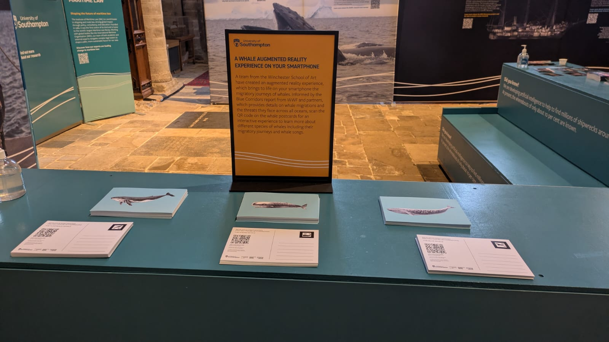

Blue Corridors (2025)

Overview
Originally developed for the 2025 ‘Whales’ exhibition at Winchester Cathedral, BLUE CORRIDORS is an interactive AR web-app based on a collaborative report between the WWF, University of Southampton, and 20 other institutions and charities.
The app raises awareness of “Blue Corridors” - a collection of vital whale migration paths throughout the world, visualising the paths and highlighting human-engineered threats which disturb them.
The app is designed in three stages:
-
Call-to-action: The audience is invited to scan a QR code on the back of a postcard, which the user to the website hosting the app.
-
AR: The user can scan one of the three registered “markers,” high-contrast graphics that the software can easily detect and use to overlay 3D graphics on the phone’s camera feed. These markers underwent several iterations to ensure each was visually distinct and aesthetically pleasing. By using a jagged border, the markers imitate the look of a stamp on the postcard.
- For accessibility, the AR scanning stage is optional. The user is able to access educational content without doing the scan or using the main portion of the app. Additionally, a timer is implemented which allows the user to skip this stage, should a valid marker not be detected.
-
Interactive Map: - The main portion of the app features a navigable globe with several options for the map overlay. An additional screen is available for the user to switch between the 3 whale species, with information on each and a recording of the whale’s call.
- Text-to-speech: When enabled, information about the current whale or man-made block is narrated, with subtitles added for extra accessibility.

UX Considerations
What makes or breaks an experience like this is the User Experience (UX) - in particular the smoothness of ‘user flow’. The user’s attention can not be taken for granted, especially in today’s environment of short-form content and instant gratification. The barriers must be as low as possible to ensure the user does not get frustrated and give up. Through my own experience with interactive apps such as this one, I knew that hosting the app on the web would be the most sensible decision (as opposed to it being downloadable).
Why a web app?
Even though it comes with limitations (which I might add are becoming smaller by the day as more research is done on standardising browsers and more tools are released by your typical tech giants and community developers alike), web development offers about as small a barrier to entry as you are going to get when asking users to interact with something on their phone. The majority of phones are connected to some form of internet access, have a web browser installed, and because of standardisation of the web and mobile devices, you can be confident the app will work for most users.
The “not having to install anything” aspect does a lot of heavy lifting for a project like this. All of the effort is concentrated on opening the camera app (or the user’s QR scanner of choice) and tapping on the link. No downloads, no manual inputting of URL addresses, no waiting.
Development
Original Sketches
This project was supported by Dr Julian Stadon, who helped to come up with the original idea, and together we drafted what the app might look like. The original plan had 8 different whale postcards, with a selection bar at the bottom of the screen. We ended up reducing the scope to make the app more approachable, with a decision to focus on 3 whales.

The selection bar concept was later reworked into a separate selection screen allowing the user to swipe between the different options - this way we saved on ever-so-valuable screen space and separated the data from the main screen (which in turn drew more attention to both.)
 I’ve always loved user flow diagrams since I was introduced to them during my Computer Science bachelor’s. For me, it’s something about how visual they are, and how efficient they are at displaying so much information - they tick all the right boxes, and they are great for pitching! In fact, that’s exactly why I created the above diagram; to sell my idea of having two separate screens to Julian. Needless to say, it worked!
I’ve always loved user flow diagrams since I was introduced to them during my Computer Science bachelor’s. For me, it’s something about how visual they are, and how efficient they are at displaying so much information - they tick all the right boxes, and they are great for pitching! In fact, that’s exactly why I created the above diagram; to sell my idea of having two separate screens to Julian. Needless to say, it worked!
AR Marker Iterations
After this project, I would consider “AR Marker Design” to be an art in and of itself - there are numerous factors and considerations at play, which I will take with me into future projects.
Depending on the app and the frameworks available, different types of markers (including no markers at all) are available as options. Applications which place an object on the floor/table can usually handle this without a marker, using data from the camera and sensors on the phone to establish a plane for which 3D objects can use as a transform origin. We decided to use AR markers as we wanted the effect to work in any location, at any orientation. As the model we were looking to project was quite small, it made sense to focus it around a central point, rather than a whole space.
Our first iteration was a bitmap image of a whale. This was before we decided to incorporate the marker as a stamp and instead were thinking that the whole postcard could have been the marker. This unfortunately did not work how we expected. Even though the tracking was robust, the user would have to have the entire postcard in view without blocking it. I figured the user would likely be holding the postcard in their hand, which may block it from view.
For iteration 2, I experimented with using a smaller marker that would sit in the corner of the postcard. As it would be smaller in relation to the camera feed, it had to be more visually distinct so that it can still be detected from a distance. I experimented with pixel art, thinking that the sharp edges would help. This wasn’t an incorrect assumption, but I then soon realised the challenge that is designing 3 separate yet identifiable pixel art whales, with very limited pixels.
The third and final iteration was the iconic stamp design. It was a clear thematic fit; the thick border made it easier for the software to pick it up, and the unique whale silhouettes made each one separately identifiable.
 Evolution of the AR Markers:
Evolution of the AR Markers:
- Bitmap image - did not offer enough contrast.
- Pixel icon - presented challenges in making 3 visually distinct icons
- Final designs
Run-Through
Tools and Acknowledgements
This app was developed with design support from Dr Julian Stadon and relies on the research of all the academics who worked on the Blue Corridors Report Tools and frameworks used:
- JavaScript
- Svelte
- A-Frame (a wrapper for Three.js)
- THREEAR
- Blender
- Python
Try it for yourself!
Below are copies of the original postcards used for the project. Feel free to print them out, or scan directly on your screen!